Tides and Currents
The Chart Panel Options is always found in the lower right corner of a chart canvas. Click on the Hamburger and find
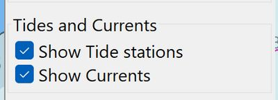
Show/Hide Tide Stations and Currents.
Dataset Notes
-
OpenCPN comes with a built in tidal data file, but can use any legacy IDX or binary tcd file. Multiple tidal files can be used at the same time. More about this further down this page.
-
Charts > Tides and Currents and Alternative data sets for information about Tide and Current files used
-
As with all predictions, the displayed values are calculated using mathematical models and actual tides and currents will vary.
-
Tide and Current predictions are not available for all areas.
-
Variations from the predicted tide may be caused by weather (offshore wind and high barometric pressure) and can vary easily by 15 minutes and 1 foot. In some remote areas (north) the period of observation used for the calculation may be relatively short, thus causing the value of the predictions to be less accurate. Predictions are predictions!
Displaying Tides
-
Available tide stations will show on the chart as green graphs with a "T" logo:
-
The "T" becomes a yellow and blue vertical bar when the scale is greater than 1:500.000
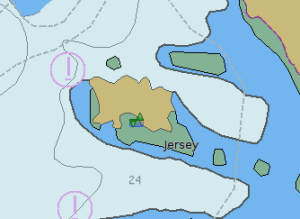
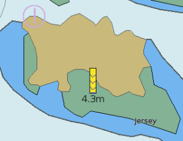
The vertical bar contains a lot of information at a glance.
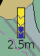
The tidal rise is 2.5m above the chart datum. The blue part is "water".
The "V" inside he bar indicates that the tide is decreasing towards Low
Water.
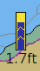
Here, the tide is rising towards High Water.
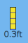
Low Water looks like this.
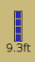
High Water Looks like this.
Right click the middle of either icon to see the tidal graph:
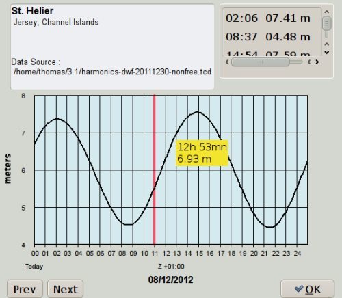
If a waypoint, route or a track is, or passes, on top of a tidal icon, a
right-click will show a context menu for those features. To see the
tidal graph, press "Show Tide Information" at the bottom of the menu.
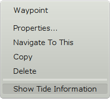
The Tidal Dialog gives the name of the station as well as the the name of the Data Source file. This is important when you have multiple sources covering the same area. Time and height for HW and LW is displayed in the upper right part.
The Yellow box, with the tidal rise and time, follows the cursor when hovering over the dialog. The time axis at the bottom displays the time, in this case he timezone is "Z +01:00", which is the same as one hour ahead (east) of UTC, that used to be called GMT.
In North America it is common to use a three or four letter acronym for timezones.
UNITED STATES TIME ZONE CODES |
UTC OFFSET |
AST |
ATLANTIC STANDARD TIME |
EST |
EASTERN STANDARD TIME |
EDT |
EASTERN DAYLIGHT TIME |
CST |
CENTRAL STANDARD TIME |
CDT |
CENTRAL DAYLIGHT TIME |
MST |
MOUNTAIN STANDARD TIME |
MDT |
MOUNTAIN DAYLIGHT TIME |
PST |
PACIFIC STANDARD TIME |
PDT |
PACIFIC DAYLIGHT TIME |
AKST |
ALASKA TIME |
AKDT |
ALASKA DAYLIGHT TIME |
HAST |
HAWAII-ALEUTIAN STANDARD TIME |
HADT |
HAWAII-ALEUTIAN DAYLIGHT TIME |
SST |
SAMOA STANDARD TIME |
SDT |
SAMOA DAYLIGHT TIME |
CHST |
CHAMORRO STANDARD TIME |
Displaying Currents
Available current stations will show on the chart as orange diamonds, when zooming in arrows will appear pointing in the direction of the set. Note that "current" here is short for "Tidal Current", and is the same as the UK term "Tidal Stream".
Master current stations are shown like this
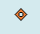
in all scales. No direction is associated with these stations but they
can be queried, trough a
right click, for the magnitude of the current.
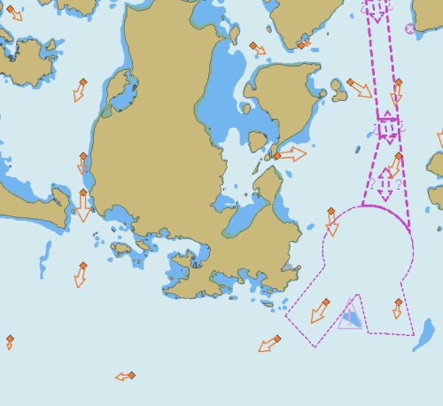
Arrow indicates current direction and strength - the bigger the
arrow, the more current.
The size of the arrows can be customized by users in the opencpn.ini
(opencpn.conf) file.
In the [Settings/Others] section you can set the option CurrentArrowScale to a positive number representing a percentage scaling factor of the current arrows. The values below 100 mean the arrows will be smaller than now, the values above 100 will cause them to be bigger.
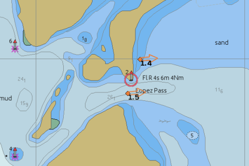
A numerical value can be displayed next to the arrow.
To do this go to Options→Ships→AIS Targets and tick the box "Show names with AIS targets at a scale grater than 1:", and set a scale. When zoomed in to a scale greater than this, the current will also be displayed with a number
Right click the orange box to see current graph:
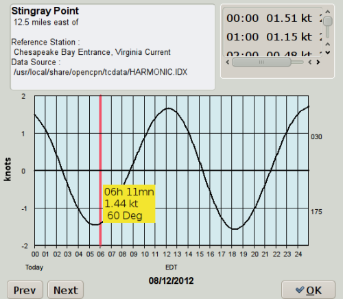
If a waypoint, route or a track is, or passes, on top of a current icon, a rightclick will show a context menu for those features. To see the current graph, press "Show Current Information" at the bottom of the menu.
The Yellow box, with time,speed and direction, follows the cursor when hovering over the dialog.
Note that OpenCPN can only display "Reversing Currents" found in restricted waterways, such as rivers and straits.
The general case with "Rotary Tidal Currents", can not be displayed with this interface, but are available for some areas as Grib files.